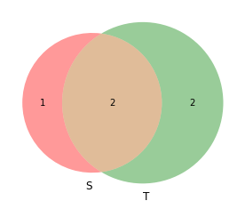

==isdisjoint(), !=issubset(), <=; strict: <intersection(), &union, |.difference, -symmetric_difference(), ^import sys
print(sys.executable)
from IPython.core.interactiveshell import InteractiveShell
InteractiveShell.ast_node_interactivity = "all"/home/jcmint/anaconda3/envs/learningenv/bin/pythonSets are defined as a collection of elements, and can be defined explicitly {heads, tails}, or implicitly {1:9}, {A:Z}.

myset = set([1,2,3])
print("1.", myset)
# Create an empty set: set() or set({})
empty = set()
print(empty)
myset.add((2, '2', 0))
myset.discard(0)
print("3.", myset)
# No way to add multiple elements to a set - instead, consider a union with a set that has the target elements1. {1, 2, 3}
set()
3. {1, 2, 3, (2, '2', 0)}# Test emptiness
print(not myset) # does myset contain no elements?
print(len(myset))False
4Venn diagrams can represent set members - elements appear in or out of a set.

Necessary to install matplotlib and matplotlib-venn
conda activate learningenv
conda install matplotlib
Proceed ([y]/n)? y
conda install -c conda-forge matplotlib-venn import matplotlib.pyplot as plt
import matplotlib_venn as venn
S = {1, 2, 3}
T = {0, 22, 1, 3}
venn.venn2([S, T], set_labels = {'S', 'T'})
plt.show()<matplotlib_venn._common.VennDiagram at 0x7ff80182c470>
png
s1 = {0, 1}
s2 = {1, 0}
s3 = {1, 0 , 1}
s4 = {0, 2}
s5 = {3, 4}Return a logical value that describes the relations between sets.
==Two sets are equal if they have exactly the same elements:
s1 == s2, s1 == s3, s1 == s5(True, True, False)Since all elements need to be in both sets for the sets to be equal, Equality is difficult to achieve.
isdisjoint(), !=Two sets are disjoint if they share NO values - overlap region is EMPTY. Empty set is disjoint with all sets except all other empty sets.

s1 != s2, s1.isdisjoint(s4)(False, False)issubset(), <=; strict: <If every element in a set is in another set, then it is a subset of that set. {0} is a subset of every set. If two sets are subsets of each other, then they are equal (A <- B & B <- A means A == B)

A strict subset - a subset that is NOT equal to its superset.

print("1.", s1 <= s2 , s1.issubset(s4))
# Check for STRICT subset: using `<`
print("2.", s1 < s2, s1 < {0, 1, 2})1. True False
2. False TrueObtain a set that is the result of an operation between sets.

intersection(), &

s1.intersection(s1), s1.intersection(s4), s1.intersection(s5)({0, 1}, {0}, set())union, |Union is a non repetitive collection of elements in multiple sets.

s1 | s2, s1.union(s5)({0, 1}, {0, 1, 3, 4}).difference, -A - B is the set of elements in A but not B:

s1 - s2, s1 - s4, s4 - s1(set(), {1}, {2})symmetric_difference(), ^The set of elements that are in one but NOT BOTH sets:

s1 ^ s2, s1 ^ s4, s5.symmetric_difference(s4)(set(), {1, 2}, {0, 2, 3, 4})Basically, the Cartesian Product of two sets is the set of all combinations of the elements in both sets. You essentially generate a * b combinations where a and b are the number of elements in set A and B. For n sets, you generate a cartesian coordinate, an n element tuple ordered pair.

 ## Generating Cartesian products in Python
## Generating Cartesian products in Python
from itertools import product
faces = set({'J', 'Q', 'K'}) # Jack, queen, King
suits = set({'Dia', 'Spa'}) #diamond, spade
for i in product(faces, suits):
print(i)('Q', 'Dia')
('Q', 'Spa')
('K', 'Dia')
('K', 'Spa')
('J', 'Dia')
('J', 'Spa')Russell's Paradox is that you can define a set that cannot exist: